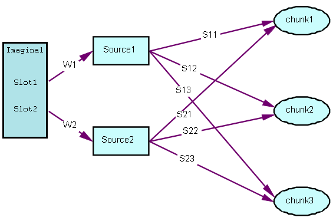
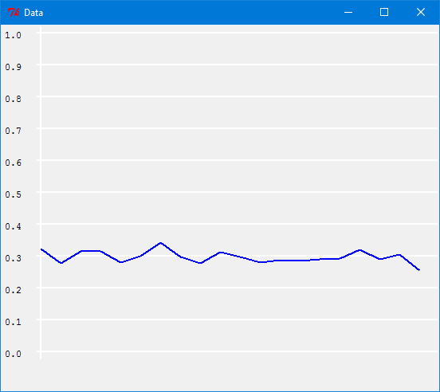
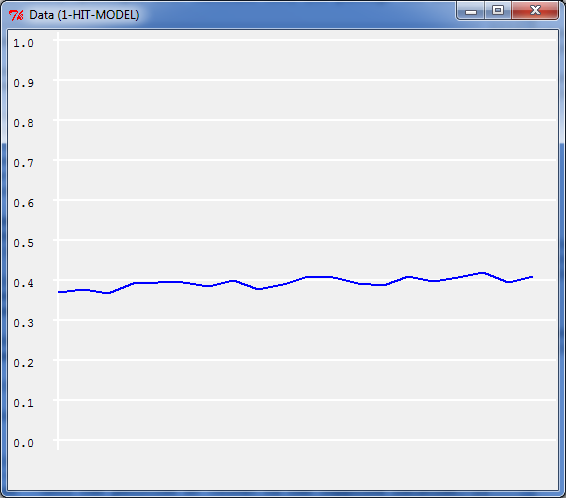
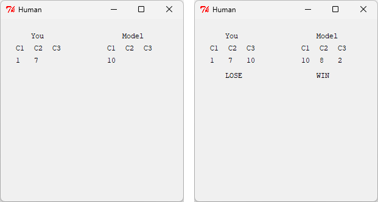

Unit 5: Activation and Context
The goal of this unit is to introduce the components of the activation equation that reflect the context of a declarative memory retrieval.
5.1 Spreading Activation
The first context component we will consider is called spreading activation. The chunks in the buffers provide a context in which to perform a retrieval. Those chunks can spread activation to the chunks in declarative memory based on the contents of their slots. Those slot contents spread an amount of activation based on their relation to the other chunks, which we call their strength of association. This essentially results in increasing the activation of those chunks which are related to the current context.
The equation for the activation Ai of a chunk i including spreading activation is defined as:
Measures of Prior Learning, Bi: The base-level activation reflects the recency and frequency of practice of the chunk as described in the previous unit.
Across all buffers: The elements k being summed over are the buffers which have been set to provide spreading activation.
Sources of Activation: The elements j being summed over are the chunks which are in the slots of the chunk in buffer k.
Weighting: Wkj is the amount of activation from source j in buffer k.
Strengths of Association: Sji is the strength of association from source j to chunk i.
: The noise value as described in the last unit.
The weights of the activation spread, Wkj, default to an even distribution from each slot within a buffer. The total amount of source activation for a buffer will be called Wk and is settable for each buffer. The Wkj values are then Wk /nk where nk is the number of slots in the chunk in buffer k which contain values that are chunks.
The strength of association, Sji, between two chunks j and i is 0 if chunk j is not the value of a slot of chunk i and j and i are not the same chunk. Otherwise, it is set using this equation:
S: The maximum associative strength (set with the :mas parameter)
fanj: the number of chunks in declarative memory in which j is the value of a slot plus one for chunk j being associated with itself.1
By default, only the imaginal buffer serves as a source of activation. The Wimaginal value defaults to 1 and all other buffers have a default weight of 0.2 Therefore, in the default case, the activation equation can be simplified to:
Where n is the number of chunks in slots of the current imaginal buffer chunk.
Here is a diagram to help you visualize how the spreading activation works. Consider a chunk in the imaginal buffer which has two chunks in its slots when a retrieval is requested and that there are three chunks in declarative memory which match the retrieval request for which the activations need to be determined.

Each of the potential chunks (which are called chunk1, chunk2, and chunk3 in the diagram above and will be referenced by the number in the name) also has a base-level activation which we will denote as Bi, and thus the total activation of the three chunks are:
There are two notes about using spreading activation. First, by default, spreading activation is disabled because :mas defaults to the value nil. In order to enable the spreading activation calculation :mas must be set to a positive value. The other thing to note is that there is no recommended value for the :mas parameter, but one almost always wants to set :mas high enough that all of the Sji values are positive.
5.2 The Fan Effect
Anderson (1974) performed an experiment in which participants studied 26 facts such as the following sentences:
1. A hippie is in the park.
2. A hippie is in the church.
3. A hippie is in the bank.
4. A captain is in the park.
5. A captain is in the cave.
6. A debutante is in the bank.
7. A fireman is in the park.
8. A giant is in the beach.
9. A giant is in the dungeon.
10. A giant is in the castle.
11. A earl is in the castle.
12. A earl is in the forest.
13. A lawyer is in the store.
...
After studying these facts, they had to judge whether they saw facts such as the following:
A hippie is in the park.
A hippie is in the cave.
A lawyer is in the store.
A lawyer is in the park.
A debutante is in the bank.
A debutante is in the cave.
A captain is in the bank.
which contained both studied sentences (targets) and new sentences (foils).
The people and locations for the study sentences could occur in any of one, two, or three of the study sentences. That is referred to as their fan in the experiment. The following tables show the recognition latencies from the experiment in seconds for targets and foils as a function of person and location fans:
Targets Foils
Location Person Fan Person Fan
Fan 1 2 3 Mean 1 2 3 Mean
1 1.111 1.174 1.222 1.169 1.197 1.221 1.264 1.227
2 1.167 1.198 1.222 1.196 1.250 1.356 1.291 1.299
3 1.153 1.233 1.357 1.248 1.262 1.471 1.465 1.399
Mean 1.144 1.202 1.357 1.20 1.236 1.349 1.340 1.308
The main effects in the data are that as the fan increases the time to respond increases and that the foil sentences take longer to respond to than the targets. We will now show how these effects can be modeled using spreading activation.
5.3 Fan Effect Model
There are two models for the fan effect included with this unit. Here we will work with the one found in the fan-model.lisp file in the unit 5 materials and the corresponding fan.lisp and fan.py experiment code files for presenting the testing phase of the experiment (the study portion of the task is not included for simplicity and the model already has chunks in declarative memory that encode all of the studied sentences to account for the initial study). This version of the task uses the vision and motor modules to read the items and respond as we have seen in most of the tasks in the tutorial. The other version of the model and task work differently but produce the same results, and how it does that is discussed in the code document for this unit.
This model can perform one trial of the testing phase when run. To run the model through one trial of the test phase you can use the function fan-sentence in the Lisp version or the function sentence in the fan module of the Python version. Those functions take four parameters. The first is a string of the person for the probe sentence. The second is a string of the location for the probe sentence. The third is whether the correct answer is true or false (t/nil in Lisp and True/False in Python), and the last is either person or location (as a symbol in Lisp and a string in Python) to choose which of the retrieval productions is used (more on that later). Here are examples which can be run to produce the trace below for the sentence “The lawyer is in the store” which is true (it is in the study set):
? (fan-sentence "lawyer" "store" t 'person)
>>> fan.sentence('lawyer','store',True,'person')
0.000 VISION SET-BUFFER-CHUNK VISUAL-LOCATION VISUAL-LOCATION0 NIL
0.000 VISION visicon-update
0.000 PROCEDURAL CONFLICT-RESOLUTION
0.050 PROCEDURAL PRODUCTION-FIRED FIND-PERSON
0.050 PROCEDURAL CLEAR-BUFFER IMAGINAL
0.050 PROCEDURAL CLEAR-BUFFER VISUAL-LOCATION
0.050 VISION Find-location
0.050 VISION SET-BUFFER-CHUNK VISUAL-LOCATION VISUAL-LOCATION0
0.050 PROCEDURAL CONFLICT-RESOLUTION
0.100 PROCEDURAL PRODUCTION-FIRED ATTEND-VISUAL-LOCATION
0.100 PROCEDURAL CLEAR-BUFFER VISUAL-LOCATION
0.100 PROCEDURAL CLEAR-BUFFER VISUAL
0.100 PROCEDURAL CONFLICT-RESOLUTION
0.185 VISION Encoding-complete VISUAL-LOCATION0-1 NIL
0.185 VISION SET-BUFFER-CHUNK VISUAL TEXT0
0.185 PROCEDURAL CONFLICT-RESOLUTION
0.235 PROCEDURAL PRODUCTION-FIRED RETRIEVE-MEANING
0.235 PROCEDURAL CLEAR-BUFFER VISUAL
0.235 PROCEDURAL CLEAR-BUFFER RETRIEVAL
0.235 DECLARATIVE start-retrieval
0.235 DECLARATIVE RETRIEVED-CHUNK LAWYER
0.235 DECLARATIVE SET-BUFFER-CHUNK RETRIEVAL LAWYER
0.235 PROCEDURAL CONFLICT-RESOLUTION
0.250 IMAGINAL SET-BUFFER-CHUNK IMAGINAL (ISA CHUNK)
0.250 PROCEDURAL CONFLICT-RESOLUTION
0.300 PROCEDURAL PRODUCTION-FIRED ENCODE-PERSON
0.300 PROCEDURAL CLEAR-BUFFER RETRIEVAL
0.300 PROCEDURAL CLEAR-BUFFER VISUAL-LOCATION
0.300 VISION Find-location
0.300 VISION SET-BUFFER-CHUNK VISUAL-LOCATION VISUAL-LOCATION1
0.300 PROCEDURAL CONFLICT-RESOLUTION
0.350 PROCEDURAL PRODUCTION-FIRED ATTEND-VISUAL-LOCATION
0.350 PROCEDURAL CLEAR-BUFFER VISUAL-LOCATION
0.350 PROCEDURAL CLEAR-BUFFER VISUAL
0.350 PROCEDURAL CONFLICT-RESOLUTION
0.435 VISION Encoding-complete VISUAL-LOCATION1-0 NIL
0.435 VISION SET-BUFFER-CHUNK VISUAL TEXT1
0.435 PROCEDURAL CONFLICT-RESOLUTION
0.485 PROCEDURAL PRODUCTION-FIRED RETRIEVE-MEANING
0.485 PROCEDURAL CLEAR-BUFFER VISUAL
0.485 PROCEDURAL CLEAR-BUFFER RETRIEVAL
0.485 DECLARATIVE start-retrieval
0.485 DECLARATIVE RETRIEVED-CHUNK STORE
0.485 DECLARATIVE SET-BUFFER-CHUNK RETRIEVAL STORE
0.485 PROCEDURAL CONFLICT-RESOLUTION
0.535 PROCEDURAL PRODUCTION-FIRED ENCODE-LOCATION
0.535 PROCEDURAL CLEAR-BUFFER RETRIEVAL
0.535 PROCEDURAL CONFLICT-RESOLUTION
0.585 PROCEDURAL PRODUCTION-FIRED RETRIEVE-FROM-PERSON
0.585 PROCEDURAL CLEAR-BUFFER RETRIEVAL
0.585 DECLARATIVE start-retrieval
0.585 PROCEDURAL CONFLICT-RESOLUTION
0.839 DECLARATIVE RETRIEVED-CHUNK P13
0.839 DECLARATIVE SET-BUFFER-CHUNK RETRIEVAL P13
0.839 PROCEDURAL CONFLICT-RESOLUTION
0.889 PROCEDURAL PRODUCTION-FIRED YES
0.889 PROCEDURAL CLEAR-BUFFER IMAGINAL
0.889 PROCEDURAL CLEAR-BUFFER RETRIEVAL
0.889 PROCEDURAL CLEAR-BUFFER MANUAL
0.889 MOTOR PRESS-KEY KEY k
0.889 PROCEDURAL CONFLICT-RESOLUTION
1.039 PROCEDURAL CONFLICT-RESOLUTION
1.089 PROCEDURAL CONFLICT-RESOLUTION
1.099 PROCEDURAL CONFLICT-RESOLUTION
1.189 PROCEDURAL CONFLICT-RESOLUTION
1.189 ------ Stopped because no events left to processThe model can also be run over each of the conditions to produce the results for the whole experiment using the fan-experiment function in Lisp or the experiment function from the fan module in Python. Those functions take no parameters and will report the fit to the data along with the tables of response times and an indication of whether the answer provided was correct. [Note, you will probably want to set the :v parameter in the model to nil and reload it before running the whole experiment to disable the trace so that it runs much faster]:
CORRELATION: 0.864
MEAN DEVIATION: 0.053
TARGETS:
Person fan
Location 1 2 3
fan
1 1.099 (T ) 1.157 (T ) 1.205 (T )
2 1.157 (T ) 1.227 (T ) 1.286 (T )
3 1.205 (T ) 1.286 (T ) 1.354 (T )
FOILS:
1 1.245 (T ) 1.290 (T ) 1.328 (T )
2 1.290 (T ) 1.335 (T ) 1.373 (T )
3 1.328 (T ) 1.373 (T ) 1.411 (T )Two ACT-R parameters were estimated to produce that fit to the data. They are the latency factor (:lf), which is the F in the retrieval latency equation from the last unit, set to 0.63 and the maximum associative strength (:mas), which is the S parameter in the Sji equation above, set to 1.6. The spreading activation value for the imaginal buffer is left at the default value of 1.0. We will now look at how this model performs the task and how spreading activation leads to the effects in the data.
5.3.1 Model Representations
The study sentences are encoded in chunks placed into the model’s declarative memory like this:
(add-dm
(p1 ISA comprehend-sentence relation in arg1 hippie arg2 park)
(p2 ISA comprehend-sentence relation in arg1 hippie arg2 church)
(p3 ISA comprehend-sentence relation in arg1 hippie arg2 bank)
(p4 ISA comprehend-sentence relation in arg1 captain arg2 park)
(p5 ISA comprehend-sentence relation in arg1 captain arg2 cave)
(p6 ISA comprehend-sentence relation in arg1 debutante arg2 bank)
(p7 ISA comprehend-sentence relation in arg1 fireman arg2 park)
(p8 ISA comprehend-sentence relation in arg1 giant arg2 beach)
(p9 ISA comprehend-sentence relation in arg1 giant arg2 castle)
(p10 ISA comprehend-sentence relation in arg1 giant arg2 dungeon)
(p11 ISA comprehend-sentence relation in arg1 earl arg2 castle)
(p12 ISA comprehend-sentence relation in arg1 earl arg2 forest)
(p13 ISA comprehend-sentence relation in arg1 lawyer arg2 store)
...)They represent the items from the study portion of the experiment in the form of an association among the concepts e.g. p13 is encoding the sentence “The lawyer is in the store”.
There are also meaning chunks which connect the text read from the display to the concepts. For instance, relevant to chunk p13 above we have:
(lawyer ISA meaning word "lawyer")
(store ISA meaning word "store")The base-level activations of these meaning chunks have been set to 10 to reflect the fact that they are well practiced and should not fail to be retrieved, but the activations of the comprehend-sentence chunks are left at the default of 0 to reflect that they have only been learned during this experiment.
5.3.2 Perceptual Encoding
In this section we will briefly describe the productions that perform the perceptual parts of the task. This is similar to the steps that have been done in previous models and thus it should be familiar. One small difference is that this model does not place a chunk into the goal buffer to maintain state information for determining the production firing order and instead relies on the states of the buffers and modules involved to constrain the ordering of the production firing.
Only the person and location are displayed for the model to perform the task. If the model were to read all of the words in the sentence it would be difficult to be able to respond fast enough to match the experimental data, and in fact studies of the fan effect done using an eye tracker verify that participants generally only fixate those two words from the sentences during the testing trials. Thus to keep the model simple only the critical words are shown on the display. To read and encode the words the model goes through a four step process.
The first production to fire issues a request to the visual-location buffer to find the person word and it also requests that the imaginal module create a new chunk to hold the sentence being read from the screen:
(P find-person
?visual-location>
buffer unrequested
?imaginal>
state free
==>
+imaginal>
+visual-location>
ISA visual-location
screen-x lowest)The first query on the LHS of that production has not been used previously in the tutorial. The check that the visual-location buffer holds a chunk which was not requested is a way to test that a new display has been presented. The buffer stuffing mechanism will automatically place a chunk into the buffer if it is empty when the screen changes and because that chunk was not the result of a request it is tagged as unrequested. Thus, this production will match whenever the screen has recently changed if the visual-location buffer was empty at the time of the change and the imaginal module is currently free.
The next production to fire harvests the requested visual-location and requests a shift of attention to it:
(P attend-visual-location
=visual-location>
?visual-location>
buffer requested
?visual>
state free
==>
+visual>
cmd move-attention
screen-pos =visual-location)Then the chunk in the visual buffer is harvested and a retrieval request is made to request the chunk that represents the meaning of that word:
(P retrieve-meaning
=visual>
ISA visual-object
value =word
==>
+retrieval>
ISA meaning
word =word)Finally, the retrieved chunk is harvested and the meaning chunk is placed into a slot of the chunk in the imaginal buffer:
(P encode-person
=retrieval>
=imaginal>
ISA comprehend-sentence
arg1 nil
==>
=imaginal>
arg1 =retrieval
+visual-location>
ISA visual-location
screen-x highest)This production also issues the visual-location request to find the location word and the same sequence of productions fire to attend and encode the location ending with the encode-location production firing instead of encode-person.
5.3.3 Determining the Response
After the encoding has happened the imaginal chunk will look like this for the sentence “The lawyer is in the store.”:
IMAGINAL: IMAGINAL-CHUNK0
IMAGINAL-CHUNK0
ARG1 LAWYER
ARG2 STORE
At that point one of these two productions will be selected and fired to retrieve a study sentence:
(P retrieve-from-person
=imaginal>
ISA comprehend-sentence
arg1 =person
arg2 =location
?retrieval>
state free
buffer empty
==>
=imaginal>
+retrieval>
ISA comprehend-sentence
arg1 =person)
(P retrieve-from-location
=imaginal>
ISA comprehend-sentence
arg1 =person
arg2 =location
?retrieval>
state free
buffer empty
==>
=imaginal>
+retrieval>
ISA comprehend-sentence
arg2 =location)A thorough model of the task would have those two productions competing and one would randomly be selected. However, to simplify things for demonstration the experiment code which runs this task forces one or the other to be selected for each trial, and the data is then averaged over two runs of each trial with one trial using retrieve-from-person and the other using retrieve-from-location.
One important thing to notice is that those productions request the retrieval of a studied chunk based on only one of the items from the probe sentence. By doing so it ensures that one of the study sentences will be retrieved instead of resulting in a retrieval failure for the foil trials. If retrieval failure were used by the model to detect the foils then there would be no difference in response times for the foil probes because the time of a retrieval failure is based solely upon the retrieval threshold. However, the data clearly shows that the fan of the items affects the time to respond to both targets and foils.
After one of those productions fires, a chunk representing a study trial will be retrieved and one of the following productions will fire to produce a response:
(P yes
=imaginal>
ISA comprehend-sentence
arg1 =person
arg2 =location
=retrieval>
ISA comprehend-sentence
arg1 =person
arg2 =location
?manual>
state free
==>
+manual>
cmd press-key
key "k")
(P mismatch-person
=imaginal>
ISA comprehend-sentence
arg1 =person
arg2 =location
=retrieval>
ISA comprehend-sentence
- arg1 =person
?manual>
state free
==>
+manual>
ISA press-key
key "d")
(P mismatch-location
=imaginal>
ISA comprehend-sentence
arg1 =person
arg2 =location
=retrieval>
ISA comprehend-sentence
- arg2 =location
?manual>
state free
==>
+manual>
cmd press-key
key "d")If the retrieved sentence matches the probe then the model responds with the true response, “k”, and if either one of the components does not match then the model responds with “d”.
5.4 Analyzing the Retrieval of the Critical Study Chunk in the Fan model
The perceptual and encoding actions the model performs for this task have a total cost of 0.585 seconds and the time to make the motor response after retrieving a comprehend-sentence chunk is 0.260 seconds. Those times are constant across all trials. The difference in the conditions will result from the time it takes to retrieve the studied sentence. Recall from the last unit that the time to retrieve a chunk i is based on its activation and specified by the equation:
Thus, it is differences in the activations of the chunks representing the studied items which will result in the different times to respond to different trials.
The chunk in the imaginal buffer at the time of the retrieval (after either retrieve-from-person or retrieve-from-location fires) will look like this:
IMAGINAL: IMAGINAL-CHUNK0
IMAGINAL-CHUNK0ARG1 person
ARG2 location
where person and location will be the chunks that represent the meanings for the particular probe being presented.
The retrieval request will look like this for the person:
+retrieval>
arg1 person
or this for the location:
+retrieval>
arg2 location
depending on which of the productions was chosen to perform the retrieval.
The important thing to note is that because the sources of activation in the buffer are the same for either retrieval request the spreading activation will not differ between the two cases. You might wonder then why we would need to have both options. That will be described in the detailed examples below.
5.4.1 A simple target trial
The first case we will look at is the target sentence “The lawyer is in the store”. Both the person and location in this sentence have a fan of one in the experiment – they each only occur in that one study sentence.
The imaginal buffer’s chunk looks like this at the time of the critical retrieval (see the code document for a note about this):
IMAGINAL: IMAGINAL-CHUNK0
IMAGINAL-CHUNK0
ARG1 LAWYER
ARG2 STORE
We will now look at the retrieval which results from the retrieve-from-person production firing. For the following traces we have enabled the activation trace parameter (:act) by setting it to t. That causes additional information to be displayed in the trace when a retrieval attempt is made. It shows all of the chunks that were attempted to be matched, and then for each that does match it shows all the details of the activation computation. Here is the trace of the model when that retrieval request occurs:
0.585 DECLARATIVE start-retrieval
Chunk P13 matches
Chunk P12 does not match
Chunk P11 does not match
Chunk P10 does not match
Chunk P9 does not match
Chunk P8 does not match
Chunk P7 does not match
Chunk P6 does not match
Chunk P5 does not match
Chunk P4 does not match
Chunk P3 does not match
Chunk P2 does not match
Chunk P1 does not match
Computing activation for chunk P13
Computing base-level
Starting with blc: 0.0
Total base-level: 0.0
Computing activation spreading from buffers
Spreading 1.0 from buffer IMAGINAL chunk IMAGINAL-CHUNK0
sources of activation are: (STORE LAWYER)
Spreading activation 0.45342642 from source STORE level 0.5 times Sji 0.90685284
Spreading activation 0.45342642 from source LAWYER level 0.5 times Sji 0.90685284
Total spreading activation: 0.90685284
Adding transient noise 0.0
Adding permanent noise 0.0
Chunk P13 has an activation of: 0.90685284
Chunk P13 has the current best activation 0.90685284
Chunk P13 with activation 0.90685284 is the best
0.585 PROCEDURAL CONFLICT-RESOLUTION
0.839 DECLARATIVE RETRIEVED-CHUNK P13
0.839 DECLARATIVE SET-BUFFER-CHUNK RETRIEVAL P13
0.839 PROCEDURAL CONFLICT-RESOLUTIONIn this case, the only chunk which matches the request is chunk p13. Note that this would look exactly the same if the retrieve-from-location production had fired because it would still be the only chunk that matched the request and the sources of activation are the same regardless of which one fires.
Remember that we have set the parameter F to 0.63, the parameter S to 1.6, and the base-level activation for the comprehend-sentence chunks is 0 in this model.
Looking at this trace, we see the Sji values from store to p13 and lawyer to p13 are both approximately 0.907 which comes from the equation:
The value of S was estimated to fit the data as 1.6 and the chunk fan of both the store and lawyer chunks is 2 (not the same as the fan from the experiment which is only one) because they each occur as a slot value in only the p13 chunk plus each chunk is always credited with a reference to itself. Then substituting into the equation we get:
The Wj values (called the level in the activation trace) are 0.5 because the source activation from the imaginal buffer is the default value of 1.0 and there are two source chunks. The activation noise for chunks is turned off in this model to make it easier to see the spreading activation effects. Thus the activation of chunk p13 is:
Finally, we see the time to complete the retrieval (the time between the start-retrieval and the retrieved-chunk actions) is 0.254 seconds (0.839 - 0.585) which is determined from the retrieval time equation based on the chunk’s activation:
Adding that retrieval time to the fixed costs of 0.585 seconds to do the perception and encoding and the 0.26 seconds to perform the response gives us a total of 1.099 seconds, which is the value in the fan 1-1 cell of the model data for targets presented above.
Now that we have looked at the details of how the retrieval and total response times are determined for the simple case we will look at a few other cases.
5.4.2 A different target trial
The target sentence “The hippie is in the bank” is a more interesting case. Hippie is the person in three of the study sentences and bank is the location in two of them. Now we will see why it takes the model longer to respond to such a probe. Here is the activation trace for that situation (like the :trace-detail parameter, the :act parameter can be set to different values to change the amount of information provided and here we have set it to medium to reduce the output slightly):
0.585 DECLARATIVE start-retrieval
Chunk P3 matches
Chunk P2 matches
Chunk P1 matches
Computing activation for chunk P3
Computing base-level
Starting with blc: 0.0
Total base-level: 0.0
Computing activation spreading from buffers
Spreading 1.0 from buffer IMAGINAL chunk IMAGINAL-CHUNK0
sources of activation are: (BANK HIPPIE)
Spreading activation 0.25069386 from source BANK level 0.5 times Sji 0.5013877
Spreading activation 0.10685283 from source HIPPIE level 0.5 times Sji 0.21370566
Total spreading activation: 0.3575467
Adding transient noise 0.0
Adding permanent noise 0.0
Chunk P3 has an activation of: 0.3575467
Chunk P3 has the current best activation 0.3575467
Computing activation for chunk P2
Computing base-level
Starting with blc: 0.0
Total base-level: 0.0
Computing activation spreading from buffers
Spreading 1.0 from buffer IMAGINAL chunk IMAGINAL-CHUNK0
sources of activation are: (BANK HIPPIE)
Spreading activation 0.0 from source BANK level 0.5 times Sji 0.0
Spreading activation 0.10685283 from source HIPPIE level 0.5 times Sji 0.21370566
Total spreading activation: 0.10685283
Adding transient noise 0.0
Adding permanent noise 0.0
Chunk P2 has an activation of: 0.10685283
Computing activation for chunk P1
Computing base-level
Starting with blc: 0.0
Total base-level: 0.0
Computing activation spreading from buffers
Spreading 1.0 from buffer IMAGINAL chunk IMAGINAL-CHUNK0
sources of activation are: (BANK HIPPIE)
Spreading activation 0.0 from source BANK level 0.5 times Sji 0.0
Spreading activation 0.10685283 from source HIPPIE level 0.5 times Sji 0.21370566
Total spreading activation: 0.10685283
Adding transient noise 0.0
Adding permanent noise 0.0
Chunk P1 has an activation of: 0.10685283
Chunk P3 with activation 0.3575467 is the best
0.585 PROCEDURAL CONFLICT-RESOLUTION
1.026 DECLARATIVE RETRIEVED-CHUNK P3
1.026 DECLARATIVE SET-BUFFER-CHUNK RETRIEVAL P3
1.026 PROCEDURAL CONFLICT-RESOLUTIONThere are three chunks that match the request for a chunk with an arg1 value of hippie. Each receives the same amount of activation being spread from hippie. Because hippie is a member of three chunks it has a chunk fan of 4 and thus the S(hippie)i value is:
Chunk p3 also contains the chunk bank in its arg2 slot and thus receives the source spreading from it as well.
Now we will look at the case when retrieve-from-location fires for this probe sentence:
0.585 DECLARATIVE start-retrieval
Chunk P6 matches
Chunk P3 matches
Computing activation for chunk P6
Computing base-level
Starting with blc: 0.0
Total base-level: 0.0
Computing activation spreading from buffers
Spreading 1.0 from buffer IMAGINAL chunk IMAGINAL-CHUNK0
sources of activation are: (BANK HIPPIE)
Spreading activation 0.25069386 from source BANK level 0.5 times Sji 0.5013877
Spreading activation 0.0 from source HIPPIE level 0.5 times Sji 0.0
Total spreading activation: 0.25069386
Adding transient noise 0.0
Adding permanent noise 0.0
Chunk P6 has an activation of: 0.25069386
Chunk P6 has the current best activation 0.25069386
Computing activation for chunk P3
Computing base-level
Starting with blc: 0.0
Total base-level: 0.0
Computing activation spreading from buffers
Spreading 1.0 from buffer IMAGINAL chunk IMAGINAL-CHUNK0
sources of activation are: (BANK HIPPIE)
Spreading activation 0.25069386 from source BANK level 0.5 times Sji 0.5013877
Spreading activation 0.10685283 from source HIPPIE level 0.5 times Sji 0.21370566
Total spreading activation: 0.3575467
Adding transient noise 0.0
Adding permanent noise 0.0
Chunk P3 has an activation of: 0.3575467
Chunk P3 is now the current best with activation 0.3575467
Chunk P3 with activation 0.3575467 is the best
0.585 PROCEDURAL CONFLICT-RESOLUTION
1.026 DECLARATIVE RETRIEVED-CHUNK P3
1.026 DECLARATIVE SET-BUFFER-CHUNK RETRIEVAL P3
1.026 PROCEDURAL CONFLICT-RESOLUTIONIn this case there are only two chunks which match the request for a chunk with an arg2 value of bank.
Regardless of which production fired to request the retrieval, chunk p3 had the highest activation because it received spreading activation from both sources. Thus, even if there is more than one chunk which matches the retrieval request issued by retrieve-from-person or retrieve-from-location the correct study sentence will always be retrieved because its activation will be the highest, and that activation value will be the same in both cases.
Notice that the activation of chunk p3 is less than the activation that chunk p13 had in the previous example because the source activation being spread to p3 is less due to the higher fan of the source elements resulting in lower Sji values. Because the activation is smaller, it takes longer to retrieve such a fact and that gives us the difference in response time effect of fan in the data.
5.4.3 A foil trial
Now we will look at a foil trial. The foil probe “The giant is in the bank” is similar to the target that we looked at in the last section. The person has an experimental fan of three and the location has an experimental fan of two. This time however there is no matching study sentence. Here is the medium activation trace when retrieve-from-person is chosen:
0.585 DECLARATIVE start-retrieval
Chunk P10 matches
Chunk P9 matches
Chunk P8 matches
Computing activation for chunk P10
Computing base-level
Starting with blc: 0.0
Total base-level: 0.0
Computing activation spreading from buffers
Spreading 1.0 from buffer IMAGINAL chunk IMAGINAL-CHUNK0
sources of activation are: (BANK GIANT)
Spreading activation 0.0 from source BANK level 0.5 times Sji 0.0
Spreading activation 0.10685283 from source GIANT level 0.5 times Sji 0.21370566
Total spreading activation: 0.10685283
Adding transient noise 0.0
Adding permanent noise 0.0
Chunk P10 has an activation of: 0.10685283
Chunk P10 has the current best activation 0.10685283
Computing activation for chunk P9
Computing base-level
Starting with blc: 0.0
Total base-level: 0.0
Computing activation spreading from buffers
Spreading 1.0 from buffer IMAGINAL chunk IMAGINAL-CHUNK0
sources of activation are: (BANK GIANT)
Spreading activation 0.0 from source BANK level 0.5 times Sji 0.0
Spreading activation 0.10685283 from source GIANT level 0.5 times Sji 0.21370566
Total spreading activation: 0.10685283
Adding transient noise 0.0
Adding permanent noise 0.0
Chunk P9 has an activation of: 0.10685283
Chunk P9 matches the current best activation 0.10685283
Computing activation for chunk P8
Computing base-level
Starting with blc: 0.0
Total base-level: 0.0
Computing activation spreading from buffers
Spreading 1.0 from buffer IMAGINAL chunk IMAGINAL-CHUNK0
sources of activation are: (BANK GIANT)
Spreading activation 0.0 from source BANK level 0.5 times Sji 0.0
Spreading activation 0.10685283 from source GIANT level 0.5 times Sji 0.21370566
Total spreading activation: 0.10685283
Adding transient noise 0.0
Adding permanent noise 0.0
Chunk P8 has an activation of: 0.10685283
Chunk P8 matches the current best activation 0.10685283
Chunk P10 chosen among the chunks with activation 0.10685283
0.585 PROCEDURAL CONFLICT-RESOLUTION
1.151 DECLARATIVE RETRIEVED-CHUNK P10
1.151 DECLARATIVE SET-BUFFER-CHUNK RETRIEVAL P10
1.151 PROCEDURAL CONFLICT-RESOLUTIONThere are three chunks that match the request for a chunk with an arg1 value of giant and each receives the same amount of activation being spread from giant. However, none contain an arg2 value of bank. Thus they only get activation spread from one source and have a lesser activation value than the corresponding target sentence had. Because the activation is smaller, the retrieval time is greater. This results in the effect of foil trials taking longer than target trials.
Before concluding this section however, let us look at the trace if retrieve-from-location were to fire for this foil:
0.585 DECLARATIVE start-retrieval
Chunk P6 matches
Chunk P3 matches
Computing activation for chunk P6
Computing base-level
Starting with blc: 0.0
Total base-level: 0.0
Computing activation spreading from buffers
Spreading 1.0 from buffer IMAGINAL chunk IMAGINAL-CHUNK0
sources of activation are: (BANK GIANT)
Spreading activation 0.25069386 from source BANK level 0.5 times Sji 0.5013877
Spreading activation 0.0 from source GIANT level 0.5 times Sji 0.0
Total spreading activation: 0.25069386
Adding transient noise 0.0
Adding permanent noise 0.0
Chunk P6 has an activation of: 0.25069386
Chunk P6 has the current best activation 0.25069386
Computing activation for chunk P3
Computing base-level
Starting with blc: 0.0
Total base-level: 0.0
Computing activation spreading from buffers
Spreading 1.0 from buffer IMAGINAL chunk IMAGINAL-CHUNK0
sources of activation are: (BANK GIANT)
Spreading activation 0.25069386 from source BANK level 0.5 times Sji 0.5013877
Spreading activation 0.0 from source GIANT level 0.5 times Sji 0.0
Total spreading activation: 0.25069386
Adding transient noise 0.0
Adding permanent noise 0.0
Chunk P3 has an activation of: 0.25069386
Chunk P3 matches the current best activation 0.25069386
Chunk P3 chosen among the chunks with activation 0.25069386
0.585 PROCEDURAL CONFLICT-RESOLUTION
1.075 DECLARATIVE RETRIEVED-CHUNK P3
1.075 DECLARATIVE SET-BUFFER-CHUNK RETRIEVAL P3
1.075 PROCEDURAL CONFLICT-RESOLUTIONIn this case there are only two chunks which match the request for a chunk with an arg2 value of bank. Again, the activation of the chunk retrieved is less than the corresponding target trial, but it is not the same as when retrieve-from-person fired. That is why the model is run with each of those productions fired once for each probe with the results being averaged together. Otherwise the foil data would only show the effect of fan for the item that was used to retrieve the study chunk.
5.5 Partial Matching
Up to now models have either always retrieved a chunk which matched the retrieval request or resulted in a failure to retrieve anything. Now we will look at modeling errors in recall in more detail. There are two kinds of errors that can occur. One is an error of commission when the wrong item is recalled. This will occur when the activation of the wrong chunk is greater than the activation of the correct chunk. The second is an error of omission when nothing is recalled. This will occur when no chunk has activation above the retrieval threshold.
We will continue to look at productions from the fan model for now. In particular, this production requests the retrieval of a chunk:
(P retrieve-from-person
=imaginal>
ISA comprehend-sentence
arg1 =person
arg2 =location
?retrieval>
state free
buffer empty
==>
=imaginal>
+retrieval>
ISA comprehend-sentence
arg1 =person)In this case an attempt is being made to retrieve a chunk with a particular person (the value bound to =person) that had been studied. If =person were the chunk giant, this retrieval request would be looking for a chunk with giant in the arg1 slot. As was shown above, there were three chunks in the model from the study set which matched that request and one of those was retrieved.
However, let us consider the case where there had been no study sentences with the person giant but there had been a sentence with the person titan in the location being probed with giant i.e. there was a study sentence “The titan is in the bank” and the test sentence is now “The giant is in the bank”. In this situation one might expect that some human participants might incorrectly classify the probe sentence as one that was studied because of the similarity between the words giant and titan. The current fan model however could not make such an error.
Producing errors like that requires the use of the partial matching mechanism. When partial matching is enabled (by setting the :mp parameter to a number) the similarity between the values in the slots of the retrieval request and the values in the slots of the chunks in declarative memory are taken into consideration. The chunk with the highest activation is still the one retrieved, but with partial matching enabled that chunk might not have the exact slot values as specified in the retrieval request.
Adding the partial matching component into the activation equation, we now have the activation Ai of a chunk i defined fully as:
Bi, Wkj, Sji, and have been discussed previously. The new term is the partial matching component.
Specification elements l: The summation is computed over the slot values of the retrieval specification.
Match Scale, P: This reflects the amount of weighting given to the similarity in slot l. This is a constant across all slots and is set with the :mp parameter (it is often referred to as the mismatch penalty).
Match Similarities, Mli: The similarity between the value l in the retrieval specification and the value in the corresponding slot of chunk i.
The similarity value, the Mli, can be set by the modeler along with the scale on which they are defined. The scale range is set with a maximum similarity (set using the :ms parameter) and a maximum difference (set using the :md parameter). By default, :ms is 0 and :md is -1.0. The similarity between anything and itself is automatically set to the maximum similarity and by default the similarity between any other pair of values is the maximum difference. Note that maximum similarity defaults to 0 and similarity values are actually negative. If a slot value matches the request then it does not penalize the activation, but if it mismatches the activation is decreased. To demonstrate partial matching we will look at two example models.
5.6 Grouped Recall
The first of these models is called grouped and found in the grouped-model.lisp file with the unit 5 materials and the task is implemented in the grouped file for each language. This is a simple demonstration model of a grouped recall task which is based on a larger model of a complex recall experiment. As with the fan model, the studied items are already specified in the model, so it does not model the encoding and study of the items. In addition, the response times and error profiles of this model are not fit to any data. This demonstration model is designed only to show the mechanism of partial matching and how it can lead to errors of commission and errors of omission. Because the model is not fit to any data, and the mechanism being studied does not rely on any of the perceptual or motor modules of ACT-R, they are not being used, and instead only a chunk in the goal buffer is used to hold both the task state and problem representation. This technique of using only the cognitive system in ACT-R can be useful when modeling a task where the timing is not important or other situations where accounting for “real world” interaction is not necessary to accomplish the objectives of the model. The experiment description text for this unit gives the details of how that is accomplished in this model and in an alternate version of the fan model which also does not use the perceptual and motor modules.
If you look at the parameter settings for this model you will see that it has a value of 0.15 for the transient noise s parameter and a retrieval threshold of -0.5. Also, to simplify the demonstration, the spreading activation described above is disabled by not providing a value for the :mas parameter. This model is set up to recall a list of nine items which are encoded in groups of three elements. The list that should be recalled is (123) (456) (789). To run the model, call the grouped-recall function in Lisp or the recall function from the grouped module in Python. That will print out the trace of the model doing the task and return a list of the model’s responses. Because the :seed parameter is set in the model you will always get the same result with the model recalling the sequence 1,2,3,4,6,5,7,8 (you can remove the setting of the :seed parameter to produce different results if you would like to explore the model further). It makes two errors in recalling that list, it transposed the recall of the 5 and 6 and it failed to recall the last item, 9. We will now look at the details of how those errors happened.
5.6.1 Error of Commission
If one turns on the activation trace for this model you will see the details of the activation computations taking place. The following is from the activation trace of the error of commission when the model recalls 6 in the second position of the second group instead of the correct item, 5. The critical comparison is between item5, which should be retrieved, and item6 which is the one retrieved:
Computing activation for chunk ITEM5
Computing base-level
Starting with blc: 0.0
Total base-level: 0.0
Computing partial matching component
comparing slot GROUP
Requested: = GROUP2 Chunk's slot value: GROUP2
similarity: 0.0
effective similarity value is 0.0
comparing slot POSITION
Requested: = SECOND Chunk's slot value: SECOND
similarity: 0.0
effective similarity value is 0.0
Total similarity score 0.0
Adding transient noise -0.59634924
Adding permanent noise 0.0
Chunk ITEM5 has an activation of: -0.59634924
Computing activation for chunk ITEM6
Computing base-level
Starting with blc: 0.0
Total base-level: 0.0
Computing partial matching component
comparing slot GROUP
Requested: = GROUP2 Chunk's slot value: GROUP2
similarity: 0.0
effective similarity value is 0.0
comparing slot POSITION
Requested: = SECOND Chunk's slot value: THIRD
similarity: -0.5
effective similarity value is -0.5
Total similarity score -0.5
Adding transient noise 0.11740411
Adding permanent noise 0.0
Chunk ITEM6 has an activation of: -0.3825959
In these examples the base-level activations, Bi, have their default value of 0, the match scale, P, has the value 1, and the only noise value is the transient component with an s of 0.15. So the calculations are really just a matter of adding up the match similarities and adding the transient noise.
One thing to notice is that the :recently-retrieved request parameter is specified in all of the requests the model makes to retrieve the items, like this one:
+retrieval>
isa item
group =group
position second
:recently-retrieved nilThat means only those chunks without a declarative finst are attempted for the matching. Because :recently-retrieved is not a slot of the chunk it does not undergo the partial matching calculation.
Looking at the matching of item5 above we see that it matches on both the group and position slots resulting in the addition of 0 to the base-level activation as a result of mismatch. It then receives an addition of about -0.596 in noise which is then its final activation value.
Next comes the matching of item6. The group slot matches the requested value of group2, but the position slots do not match. The requested value is second but item6 has a value of third. The similarity between second and third is set to -0.5 in the model, and that value is added to the activation. Then a transient noise of 0.117 is added to the activation for a total activation of about -0.383. This value is greater than the activation of item5 and thus because of random fluctuation item6 gets retrieved in error.
The similarities between the different positions are defined in the model using the set-similarities command:
(set-similarities
(first second -0.5)
(second third -0.5))Similarity values are symmetric, thus it is not necessary to also specify (second first -0.5). The similarity between a chunk and itself has the value of maximum similarity by default therefore it is not necessary to specify (first first 0), and so on, for all of the positions. Also, by default, different chunks have the maximum difference thus the similarity between first and third is -1 since it is not specified.
5.6.2 Error of Omission
Here is the portion of the detailed trace relevant to the failure to recall the ninth item:
Computing activation for chunk ITEM9
Computing base-level
Starting with blc: 0.0
Total base-level: 0.0
Computing partial matching component
comparing slot GROUP
Requested: = GROUP3 Chunk's slot value: GROUP3
similarity: 0.0
effective similarity value is 0.0
comparing slot POSITION
Requested: = THIRD Chunk's slot value: THIRD
similarity: 0.0
effective similarity value is 0.0
Total similarity score 0.0
Adding transient noise -0.5353896
Adding permanent noise 0.0
Chunk ITEM9 has an activation of: -0.5353896
We see that item9 starts out with an activation of 0 because it matches perfectly with the request and thus receives no penalty. However, it gets a transient noise of -0.535 added to it which pushes its activation below the retrieval threshold and thus it cannot be retrieved. Because it is the only matching chunk which is not marked as recently-retrieved it is the only one that can potentially be retrieved. Thus there are no chunks above the threshold and a retrieval failure occurs.
5.7 Simple Addition
The other example model for the unit which uses partial matching is fit to experimental data. The task is an experiment performed by Siegler and Shrager on the relative frequencies of different responses by 4-year-olds to addition problems. The children were asked to recall the answers to simple addition problems without counting on their fingers or otherwise computing the answer. It seems likely that many of the kids did not know the answers to the larger problems that were tested. So we will only focus on the addition table from 1+1 to 3+3, and here are the data they reported showing the proportion of answers given to each problem:
0 1 2 3 4 5 6 7 8 Other
1+1 0.00 0.05 0.86 0.00 0.02 0.00 0.02 0.00 0.00 0.06
1+2 0.00 0.04 0.07 0.75 0.04 0.00 0.02 0.00 0.00 0.09
1+3 0.00 0.02 0.00 0.10 0.75 0.05 0.01 0.03 0.00 0.06
2+2 0.02 0.00 0.04 0.05 0.80 0.04 0.00 0.05 0.00 0.00
2+3 0.00 0.00 0.07 0.09 0.25 0.45 0.08 0.01 0.01 0.06
3+3 0.04 0.00 0.00 0.05 0.21 0.09 0.48 0.00 0.02 0.11The siegler model is found in the siegler-model.lisp file of the unit and the code to perform the experiment is found in the siegler file of the code directories. As with the grouped task, there is no interface generated for the task, and thus it is not possible to run yourself through the experiment. That should not be too much of a problem however because one would guess that you would make very few errors if presented with such a task.
You can run the model through this task using the function called siegler-experiment in Lisp or experiment in the siegler module of Python. It requires one parameter which is how many times to present each of the problems, and it will report the results of those trials and the comparison to the data from the children. Since there is no learning involved with this experiment, for simplicity, the model is reset before each trial of the task. It is presented the numbers to add aurally and responds by speaking a number (which is how the experiment was run with the children). Here is an example of the output:
CORRELATION: 0.965
MEAN DEVIATION: 0.055
0 1 2 3 4 5 6 7 8 Other
1+1 0.00 0.07 0.80 0.12 0.00 0.00 0.00 0.00 0.00 0.01
1+2 0.00 0.00 0.13 0.69 0.14 0.00 0.00 0.00 0.00 0.04
1+3 0.00 0.00 0.00 0.17 0.72 0.03 0.00 0.00 0.00 0.08
2+2 0.00 0.00 0.01 0.15 0.74 0.05 0.00 0.00 0.00 0.05
2+3 0.00 0.00 0.01 0.01 0.21 0.60 0.08 0.01 0.00 0.08
3+3 0.00 0.00 0.00 0.00 0.01 0.11 0.59 0.11 0.01 0.17Like the fan model, this model does not rely on the goal buffer at all for tracking its progress. The model builds up its representation of the problem in the imaginal buffer and relies on the module states and buffer contents to determine what needs to be done next. Most of the conditions and actions in the productions for this model are similar to those that have been used in other tutorial models. Thus, you should be able to understand and follow the basic operation of the model and we will not cover it in detail here. However, there are two productions which have actions that have not been used previously in the tutorial. We will describe those new actions below. There is also a description of how the parameters were adjusted to fit the data in the code document for the unit which may be helpful to go through.
5.7.1 A Modification Request
This production in the siegler model has an action for the imaginal buffer which has not been discussed previously in the tutorial:
(p harvest-arg2
=retrieval>
=imaginal>
isa plus-fact
addend2 nil
?imaginal>
state free
==>
*imaginal>
addend2 =retrieval)An action for a buffer which begins with a * is called a modification request. It works similarly to a request which is specified with a + in that it is asking the buffer’s module to perform some action which can vary from module to module. The modification request differs from the normal request in that it does not clear the buffer automatically in the process of making the request. Not every module supports modification requests, but both the goal and imaginal modules do and they both handle them in the same manner.
A modification request to the goal or imaginal buffer is a request for the module to modify the chunk that is in the buffer in the same way that a production would modify the chunk with an = action. With the goal module the only difference between an =goal action and a *goal action will be which module is credited with the action. Consider this production from the count model in unit1:
(p start
=goal>
ISA count-from
start =num1
count nil
==>
=goal>
ISA count-from
count =num1
+retrieval>
ISA number
number =num1
)The =goal action in that production results in this output in the trace:
0.050 PROCEDURAL MOD-BUFFER-CHUNK GOALIndicating that the procedural module modified the chunk in the goal buffer. If instead the start production used a *goal action like this:
*goal>
ISA count-from
count =num1Then the trace would look like this:
0.050 PROCEDURAL MODULE-MOD-REQUEST GOAL
0.050 GOAL MOD-BUFFER-CHUNK GOALIt shows that the procedural module made a modification request to the goal buffer and then the goal module actually performed the modification to the chunk in the buffer. That may not seem like an important distinction, but if one is trying to compare a model’s actions to human brain activity then knowing which module performed an action is important.
For the imaginal module there is another difference between the =imaginal and the *imaginal actions. As we saw previously a request to create a chunk in the imaginal buffer has a time cost of 200ms. The same cost applies to modifications made to the chunk in the imaginal buffer by the imaginal module, whereas the production makes a modification immediately. Therefore if that start production were instead using the imaginal buffer (assuming the initial chunk was set appropriately and ignoring the retrieval request since all we care about here is the imaginal buffer action):
(p start
=imaginal>
ISA count-from
start =num1
count nil
==>
=imaginal>
ISA count-from
count =num1
) We would see this trace for the =imaginal action:
0.050 PROCEDURAL PRODUCTION-FIRED START
0.050 PROCEDURAL MOD-BUFFER-CHUNK IMAGINALHowever if the production used the *imaginal action (which should also include a query to test that the module is not busy but for this example we are relying on the strict safety mechanism to add it automatically):
(p start
=imaginal>
ISA count-from
start =num1
count nil
==>
*imaginal>
ISA count-from
count =num1
) Then we would see this sequence of events in the trace:
0.050 PROCEDURAL PRODUCTION-FIRED START
0.050 PROCEDURAL MODULE-MOD-REQUEST IMAGINAL
0.250 IMAGINAL MOD-BUFFER-CHUNK IMAGINALWhich shows the 200ms cost before the imaginal module makes the modification to the chunk in the buffer.
The *imaginal action is the recommended way to make changes to the chunk in the imaginal buffer because it includes the time cost for the imaginal module to make the change. However if one is not as concerned about timing or the imaginal cost is not important for the task being modeled then the =imaginal actions can be used for simplicity as has been done up to this point in the tutorial.
5.7.2 An indirect request
This production in the siegler model has a retrieval request using syntax that has not been discussed previously in the tutorial:
(P harvest-answer
=retrieval>
ISA plus-fact
sum =number
=imaginal>
isa plus-fact
?imaginal>
state free
==>
*imaginal>
sum =number
+retrieval> =number)This production harvests the chunk in the retrieval buffer and uses the value from the sum slot of that chunk in a modification request to the imaginal buffer and also makes what is called an indirect request to the retrieval buffer to retrieve the chunk which is contained in that slot. That is necessary because that chunk must be retrieved so that the value in its vocal-rep slot can be used to speak the response.
An indirect request can be made through any buffer by specifying a chunk or a variable bound to a chunk as the only component of the request. The actual request which is sent to the module when that is done is constructed as if all of the slots and values of that chunk were specified explicitly. Thus, if in the production above =number were bound to the chunk eight from the model:
(eight ISA number aural-rep 8 vocal-rep "eight")Then that retrieval request would be equivalent to this:
+retrieval>
aural-rep 8
vocal-rep "eight"
In fact, the module which receives the request will see it exactly like that – it has no access to the name of the chunk which was used to make the indirect request (thus the reason for calling it indirect). Therefore, an indirect request will be handled by the module exactly the same way as a normal request.
In this case, since it is a retrieval request, it will undergo the same activation calculations and be subject to partial matching just like any other retrieval request. Thus an indirect request to the retrieval buffer is not guaranteed to put that chunk into the buffer. In this model, the correct chunk should always be retrieved because it will match on all of its slots and receive no penalty to its activation while all of the other number chunks will receive twice the maximum difference penalty to their activation since they will mismatch on both slots and there are no similarities set in the model between numbers as used in the aural-rep slot or the strings used in the vocal-rep slot.
If one absolutely must place a copy of a specific chunk into a buffer in a production there is an action which will do that, but since that is not a recommended practice it will not be covered in the tutorial.
5.8 Learning from experience
The task for this assignment will be to create a model which can learn to perform a task better based on the experience it gains while doing the task. One way to do that is using declarative memory to retrieve a past experience which can be used to decide on an action to take. The complication however is that in many situations one may not have experienced exactly the same situation in the past. Thus, one will need to retrieve a similar experience to guide the current action, and the partial matching mechanism provides a model with a way to do that.
Instead of writing a model to fit data from an experiment, in this unit we will be writing a model which can perform a more general task. Specifically, the model must learn to play a game better. The model will be assumed to know the rules of the game, but will not have any initial experience with the game and must learn the best actions to take as it plays. In the following sections we will introduce the rules of the game, how the model interacts with the game, a description of the starting model, what is expected of your model, and how to use the provided code to run the game.
5.8.1 1-hit Blackjack
The game we will be playing is a simplified version of the casino game Blackjack or Twenty-one. In our variant there are only two players and they each have only one decision to make.
The game is played with 2 decks of cards, one for each player, consisting of cards numbered 1-10. The number of cards in the decks and the distribution of the cards in the decks are not known to the players in advance. A game will consist of several hands. On each hand, the objective of the game is to collect cards whose sum is less than or equal to 21 and greater than the sum of the opponent’s cards. When summing the values of the cards a 1 card may be counted as 11 if that sum is not greater than 21, otherwise it must be considered as only 1. At the start of a hand each player is dealt two cards. One of the cards is face up and the other is face down. A player can see both of their cards’ values but only the value of the face up card of the opponent. Each player then decides if they would like one additional card or not. Choosing to take an additional card is referred to as a “hit” and choosing to not take a card is referred to as a “stay”. This choice is made without knowing your opponent’s choice – each player makes the choice in secret. An additional constraint is that the players must act quickly. The choice must be made within a preset time limit to prevent excessive calculation or contemplation of the actions and to keep the game moving. If a player hits then they are given one additional card from their deck and their final score is the sum of the three cards (with a 1 counted as 11 if that does not exceed 21). If a player stays then their score is the sum of the two starting cards (with a 1 counted as 11). Once any extra cards have been given both players show all of the cards in their hands and the outcome is determined. If a player’s total is greater than 21 then they have lost. That is referred to as “busting”. It is possible for both players to bust in the same hand. If only one player busts then the player who did not bust wins the hand. If neither player busts then the player with the greater total wins the hand. If the players have the same total then that is considered a loss for both players. Thus to win a hand a player must have a total less than or equal to 21 and either have a greater total than the opponent’s total or have the opponent bust. After a hand is over the cards are returned to the players’ decks, they are reshuffled and another hand begins. The objective of the game is to win as many hands as possible.
There are many unknown factors in this game making it difficult to know what the optimal strategy is at the start. However, over the course of many hands one should be able to improve their winnings as they acquire more information about the current game. One complication is that the opponent may also be adapting as the game goes on. To simplify things for this assignment we will assume that the model’s opponent always plays a fixed strategy, but that the strategy is not known to the model in advance. Thus, the model will start out without knowing the specifics of the game it is playing, but should still be able to learn and improve over time.
5.8.2 General modeling task description
To keep the focus of this modeling task on the learning aspect we have abstracted away from a real interface to the game in much the same way as the fan and grouped models abstracted away from a simulation of the complete experimental task. Thus the model will not have to use either the visual or aural module for acquiring the game state. Similarly, the model will also not have to compute the scores or determine the specific outcomes of each hand. The model will be provided with all of the available game state information in a chunk in the goal buffer at two points in each hand and will only need to make one of two key presses to signal its action.
At the start of the hand the model will be given its two starting cards, the sum of those cards, and the value of the opponent’s face up card. The model then must decide whether to hit or stay. The choice is made by pressing either the H key to hit or the S key to stay. The model has exactly 10 seconds in which to make this choice and if it does not press either key within that time it is considered as staying for the hand. After 10 seconds have passed, the model’s goal chunk will be modified to reflect the actions of both players and the outcome of the game. The model will then have all of its own cards’ values, all of the opponent’s cards’ values, the final totals for its hand and the opponent’s hand, as well as the outcome for each player. The model must then use that information to determine what, if anything, it should learn from this hand before the next hand begins. The time between the feedback and the next hand will also be 10 seconds.
5.8.3 Goal chunk specifics
Here is the chunk-type definition which specifies the slots used for the chunk that will be placed into the goal buffer:
(chunk-type game-state
mc1 mc2 mc3 mstart mtot mresult oc1 oc2 oc3 ostart otot oresult state)The slots of the chunk in the goal buffer will be set by the game playing code for the model as follows:
At the start of a new hand
- state slot will be the value start
- mc1 slot will hold the value of the model’s first card (a number from 1-10)
- mc2 slot will hold the value of the model’s second card (a number from 1-10)
- mstart slot will hold the score of the model’s first two cards (a number from 4-21)
- oc1 slot will hold the value of the opponent’s face up card (a number from 1-10)
- ostart slot will hold the opponent’s starting score (a number from 2-11)
- none of the other slots will be set in the chunk
After the 10 seconds for deciding have expired and player responses are processed
- state slot will be set to the value results
- mc1, mc2, mstart, oc1, and ostart slots will be the same values as at the start of the hand
mc3 slot
- if the model hits it’s the value of the model’s third card (a number from 1-10)
- if the model stays the slot will not be set
- mtot slot will hold the total for the model’s two or three card hand (a number from 4-30)
- mresult slot will be the model’s result for the hand (one of win, lose, or bust)
- oc2 will be the opponent’s second card (a number from 1-10)
oc3 slot
- if the opponent hits it’s the value of the opponent’s third card (a number from 1-10)
- if the opponent stays the slot will not be set
- otot slot will be the total for the opponent’s two or three card hand (a number from 4-30)
- oresult slot will hold the opponent’s result for the hand (one of win, lose, or bust)
For testing, the model will be played through a series of 100 hands and its percentage of winning in each group of 5 hands will be computed. For a fixed opponent’s strategy and particular distribution of cards in the decks there is likely an optimal strategy and it may be possible to create rules which play a “perfect” game (always making the move with the best chance of winning) under known circumstances. However, since the model will not know that information in advance it will have to learn to play better, and the objective is to have a model which can improve its performance over time for a variety of different opponents and different possible decks of cards. Of course, since the cards received are likely random for any given sequence of 100 hands the model’s performance will vary and even a perfect strategy could lose all of them. Thus to determine the effectiveness of the model it will play several games of 100 hands and the results will be averaged to determine how well it is learning.
5.8.4 Starting model
A starting model for this task can be found in the 1hit-blackjack-model.lisp file with the unit 5 materials and the code for playing the game can be found in the onehit.lisp and onehit.py files. The given model uses a very simple approach to learn to play the game. It attempts to retrieve a chunk which contains an action to perform that is similar to the current hand from those which it created based on the feedback on previous hands. If it can retrieve such a chunk it performs the action that it contains, and if not it chooses to stay. Then, based on the feedback from the hand the model may create a new chunk which holds the learned information for this hand to use on future hands. As described below however, the feedback used by this starting model is not very helpful in producing a useful chunk for learning about the game – it learns a strategy of always hitting.
The productions in the starting model are fairly straight forward and it should be clear what they are doing. However, there is one action in the remember-game production which has not been used previously in the tutorial:
(p remember-game
=goal>
isa game-state
state retrieving
=retrieval>
isa learned-info
action =act
?manual>
state free
==>
=goal>
state nil
+manual>
cmd press-key
key =act
@retrieval>)On its RHS we see this action:
@retrieval>
The @ prefix is an action operator that has not been used in previous models of the tutorial. It is called the overwrite action and its purpose is to have the production modify the chunk in a buffer, much like the = operator. The difference between the overwrite and modification operators is that with the overwrite action only the slots and values specified in the overwrite action will remain in the chunk in the buffer – all other slots and values are erased. When it is used without any modifications, as is the case here, the buffer will be empty as a result of the action and the chunk which was there is not cleared and sent to declarative memory, it is simply erased from the buffer as if it did not exist.
That is done in this model to prevent that chunk from merging back into declarative memory and strengthening the chunk which was retrieved. The reason for that is because the chunk which was retrieved may not be the best action to take in the current situation either because it was retrieved due to noise or because the model does not yet have enough experience to accurately determine the best move. So, the model erases that information and waits for the feedback on the hand before creating a new chunk to represent the action to take on this hand. If it did not do that, then it could continue to strengthen and retrieve a chunk that makes a bad play just because it was created and retrieved often early on in its learning when it was the only choice.
The overwrite action is not often used because typically one wants the model to accumulate the information it is using, and there are other ways to handle the situation of not reinforcing a memory that may not be useful. One would be to mark it in some way to indicate that it was a guess so that it did not reinforce the existing chunk, for example it could be modified like this:
=retrieval>
guess t
and then restrict the retrieval so that it avoids the previous guesses when trying to determine what to do:
+retrieval>
- guess t
...
Another alternative would be to just eliminate the slots that contain the critical information so that it cannot merge with the original chunk, which for the starting model would be:
=retrieval>
mc1 nil
action nil
For this task however, to keep things simple and make it easier to look at declarative memory and see the chunks which the model is using we have chosen to use the overwrite action.
Because there are many more potential starting configurations than hands which will be played, this model uses the partial matching mechanism so that it will be able to retrieve a similar chunk when a chunk which matches exactly is not available. The given code provides the model with similarity values between numbers by using a function. This is done through the use of a “hook function” parameter in the model. A hook function parameter allows the modeler to override or modify an internal computation through code and there are several which can be specified for a model. In this case we are setting the :sim-hook parameter to compute the similarity values for the model. This is being done because the set-similarities command only allows the modeler to set the similarity value between chunks, but here we are using numbers to represent the card values and hand totals. Even if we had used chunks to represent the card values however it would still have been easier to use the hook function to compute the similarity values instead of having to explicitly specify all of the possible values for the similarities between the numbers which can occur while playing the game – essentially all of the possible pairs for numbers from 1 to 30.
The equation that is used to set the similarities between the card values is:
This ratio has two features which should work well for this task and it corresponds to results found in the psychology literature. First, the similarity is relative to the difference between the numbers so that the closer the numbers are to each other the more similar they are. Thus, 1 and 2 are more similar than 1 and 3. The other feature is that larger numbers are more similar than smaller numbers for a given difference. Therefore 21 and 22 are more similar than 1 and 2 are.
There are several other parameters which are also set in the starting model. Those are divided into two sets. The first set is those which control how the model is configured (which learning mechanisms are enabled and how the system operates), and the second set is those which control the parameters of the mechanisms used in the model. This is the first set of parameters:
(sgp :esc t :bll .5 :ol t :sim-hook "1hit-bj-number-sims"
:cache-sim-hook-results t :er t :lf 0)It enables the subsymbolic components of ACT-R. It turns on the base-level learning for declarative memory with a decay of 0.5 (the recommended value) and specifies that the optimized learning equation be used for the base-level calculation. It specifies the name of the command which will compute the similarity values, and sets a flag to let the declarative module cache the similarity values returned by that function i.e. it will only call the function once to get the similarity for a given pair of numbers. Randomness is enabled to break ties for activations and during conflict resolution. Finally, the latency factor is set to 0 so that all retrievals complete immediately which is a simplification to avoid having to tune the model’s chunk activation values to achieve appropriate timing since we are not matching latency data, but do have a time constraint of 10 seconds. Those settings should also be used in the assignment model which you write.
The other set of parameters in the starting model specifies the things which you may want to modify:
(sgp :v nil :ans .2 :mp 10.0 :rt -60)In addition to the :v flag to control the trace it sets the activation noise to a reasonable value. The mismatch penalty for partial matching is set at 10 and the retrieval threshold is set very low so that the model should always be able to retrieve some relevant chunk if there are any. These values worked well for the solution model, but may need to be adjusted for your model.
5.8.5 The Assignment
The assignment for the task is to create a model which can learn to play better in a 100 hand game without knowing the details of the opponent or the distribution of cards in the decks in advance. Thus, it must learn based on the information it acquires as it plays the game.
Although the specific information learned by the starting model does not do a good job of learning to play better it does represent a reasonable approach for a model of this game. The recommended way to approach this assignment is to modify that starting model so that it learns to play better. You are not required to use that model, but your solution must use partial matching and it must be able to learn verses a variety of opponents and with different distributions of cards in the decks – it should not incorporate any information specific to the strategy of the default opponent provided or the distribution of cards in the decks.
Here is a high level description of how this model plays the game in English from the model’s perspective. At the start of the game, can I remember a similar situation and the action I took? If so, make that action. If not then I should stay. When I get the feedback is there some pattern in the cards, actions, and results which indicates the action I should have taken? If so create a memory of the situation for this game and the action to take. Otherwise, just wait for the next hand to start.
If you choose to use the starting model, then there are two things that you will need to change about it to make it learn to play the game better. One is the information which it considers when making its initial choice, and the other is how it interprets the feedback at the end of the hand so that it creates chunks which have appropriate information about the actions it should take based on the information that is available.
Specifically, you will need to do the following things:
- Change the learned-info chunk-type to specify the slots which hold the information your model needs to describe the situation for the game (the current model only considers one of its own cards).
- Change the start production to retrieve a chunk given the information you have determined is appropriate.
- Change or replace the results-should-hit and results-should-stay productions to better test the information available at the end of the game to decide on a good action to learn (the current model does not require any particular pattern and just has two productions, one of which says it should hit regardless of the details and one which says stay regardless of the details). You may want to add more than two options as well because there are many reasonable ways to decide what move would have been “right”, but you should probably start with a small set of simple choices and see how it works before trying to cover all possible options. If you have overlapping patterns you may want to set the utilities to provide a preference between them (the current model sets the results-should-hit production to have a higher utility than results-should-stay).
With an appropriate choice of initial information and some reasonable handling of the feedback that should be sufficient to produce a model which can learn against a variety of opponents.
There are other things which you could do that may improve that model’s learning even more, and some of those are listed below. It is strongly recommended that you get a simple model which can learn to play the game using the basic operation described above before attempting to improve it with any of these or other mechanisms:
- Change the noise level and the mismatch penalty parameters to adjust the learning rate or flexibility of the model.
- Add more productions to analyze the starting position either before or after retrieving an appropriate chunk.
- Provide a strategy other than just choosing to stay when no relevant information can be retrieved.
The important thing to remember is that the model should not make any assumptions about the distribution of cards in the decks or the strategy of the opponent.
5.8.6 Running the Game and Model
There are three functions that can be used to run a model through the game against an opponent implemented in the game code. Each is described along with examples below.
Playing a number of hands
To play some number of hands of the game the onhit-hands function in Lisp or the hands function in the onehit module of Python can be used. It takes one required parameter which is the number of hands to play and an optional parameter which controls whether it prints out the details of each of those hands. It returns a list of four items. The items in the list are the counts of the model’s wins, the opponent’s wins, the times when both players bust, and the times when they are tied.
Here is an example of running it in Lisp without the optional parameter:
? (onehit-hands 5)
(2 3 0 0)Here is an example of running it in Python with the optional parameter to show the details of the hands played:
>>> onehit.hands(4,True)
Model: 6 10 -> 16 (lose) Opponent: 10 1 -> 21 (win )
Model: 2 6 3 -> 11 (lose) Opponent: 6 5 9 -> 20 (win )
Model: 5 9 7 -> 21 (win ) Opponent: 3 6 10 -> 19 (lose)
Model: 6 8 6 -> 20 (win ) Opponent: 2 10 3 -> 15 (lose)
[2, 2, 0, 0]An important thing to note is that these functions do not reset the model. Thus it will retain any information which it has learned from one use to the next, and if you want to start the model over you will have to reset it explicitly.
Playing blocks of hands
The onehit-blocks function in Lisp and blocks function in the onehit module in Python take two parameters which are the number of blocks to run and the number of hands to run in each block. It runs the model through all of those hands and returns the list of results per block where each block is represented by a list as returned by the function for running hands shown above. Here is an example with running two blocks of 5 hands each in both Lisp and Python:
? (onehit-blocks 2 5)
((2 3 0 0) (3 2 0 0))>>> onehit.blocks(2,5)
[[1, 4, 0, 0], [2, 3, 0, 0]]Note that these functions also do not reset the model.
Showing learning over multiple runs of blocks of hands
The onehit-learning function in Lisp and learning function in the onehit module of Python are used to run a model through multiple 100 hand games for analysis. It takes one required parameter which is the number of games to run the model through and then average over. It also takes an optional parameter to indicate whether or not a graph of the results should be drawn and an optional parameter to indicate a function for specifying the game details. The model will be reset before running each 100 hand game. The results of those games are collected and averaged as both 4 blocks of 25 hands and as 20 blocks of 5 hands. It returns a list of two lists. The first list is the proportion of wins in the 4 blocks of 25. This list should give an indication of whether or not the model is improving over the course of the game. The second list is the proportion of wins considering 20 blocks of 5 hands to provide a more detailed description of the learning. If the first optional parameter is not given or is specified as a true value, then an experiment window will be opened and the detailed win data will be displayed in a graph. Here is an example call and resulting graph of a run of the example model:
? (onehit-learning 50)
((0.30159998 0.30800003 0.3 0.3152) (0.332 0.264 0.308 0.336 0.268 0.324 0.328 0.28 0.34 0.268 0.308 0.3 0.31199998 0.292 0.28800002 0.296 0.344 0.3 0.332 0.304))>>> onehit.learning(50)
[[0.2976, 0.30639999999999995, 0.2992, 0.3152], [0.33599999999999997, 0.268, 0.304, 0.32, 0.26, 0.32799999999999996, 0.32, 0.284, 0.33999999999999997, 0.26, 0.304, 0.3, 0.32, 0.288, 0.284, 0.292, 0.344, 0.3, 0.32799999999999996, 0.312]]
If you do not want to see the graph then specifying the second parameter as a non-true value will suppress it:
? (onehit-learning 100 nil)
>>> onehit.learning(100,False)
The other optional parameter can be used to change the details of the decks of cards and the strategy for the opponent, and it is described in this unit’s code description text.
5.8.7 The Default Game
The default game your model will be playing is an opponent who always stays with a score of 15 or more and both decks have an effectively infinite number of cards in a distribution like a normal deck of playing cards (an equal distribution of cards with the values from 1-9 and four times as many cards with a value of 10). Under those circumstances the optimal strategy against that opponent would win about 46% of the time and choosing randomly wins about 32% of the time.
The reference solution model is able to improve from winning about 37% of the time in the first block to winning around 40% in the final block on average over the 100 hands as shown in this graph from running 500 games.

That model is also able to learn against other opponents and when the distribution of cards in the deck differs. Your model should show similar or better performance for that default game and also still be able to learn in other situations i.e. just encoding an optimal strategy for the default opponent and deck distributions into your model is not an adequate solution to the task.
After producing a model which learns to play the default game you may want to try testing it with different opponents or other distributions of cards in the decks. Details on how to change the game code and some suggestions for other game situations are found in the code description text for this unit.
5.8.8 Playing against the model
There is one other function which can be used to run the model called play-against-model in Lisp and play_against_model in the onehit module of Python. This function is similar to the one for playing hands except that instead of running an opponent from code it opens a window which allows you to play against the model. It requires a number of hands to play as a parameter along with an optional parameter indicating whether or not to print the hand results. At the start you will see your starting cards and the model’s face up card for 10 seconds in which time you must respond by pressing h to hit or s to stay. After 10 seconds pass it will then show all of your cards and all of the model’s cards along with the results for 10 seconds before going on to the next hand. Here is an example of a starting screen and the results when the human chose to hit.

References
Anderson, J. R. (1974). Retrieval of propositional information from long-term memory. Cognitive Psychology, 5, 451 – 474.
Siegler, R. S., & Shrager, J. (1984). Strategy choices in addition and subtraction: How do children know what to do? In C. Sophian (Ed.), Origins of cognitive skills (pp. 229-293). Hillsdale, NJ: Erlbaum.
↩︎This is the simple case where chunk j does not appear in more than one slot of any given chunk i, which will be the case for the models in this unit. See the reference manual or the modeling text for this unit for the more general description.
↩︎The reference manual indicates the parameter for each buffer that will change its spreading weight value.